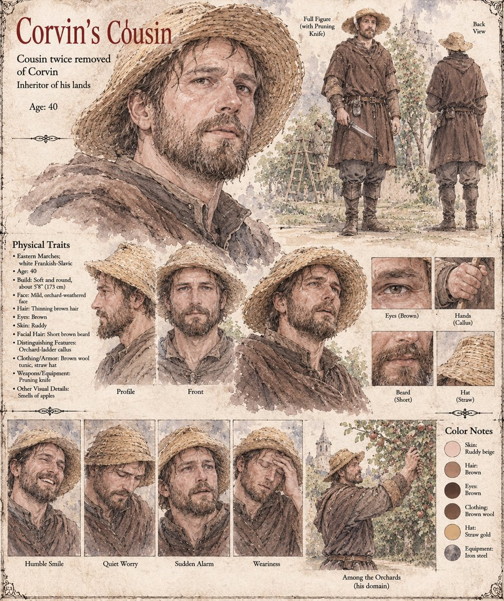

Corvin's Cousin
Cousin twice removed of Corvin · inheritor of his lands · 40 by his sheet
A cousin twice removed of Baron Corvin, and the inheritor of his lands. He spends the war managing his family’s orchards and knows nothing of grain contracts (Epilogue iii); once the barony of the Eastern Marches comes to him he governs it forgettably.
The bible says the source gives no physical description and the details were invented for consistency. The sheet makes him forty, soft and round at about 5'8", with a mild, orchard-weathered face, thinning brown hair, brown eyes, ruddy skin and a short brown beard. He has an orchard-ladder callus, smells of apples, and wears a brown wool tunic and a straw hat with a pruning knife at his belt.